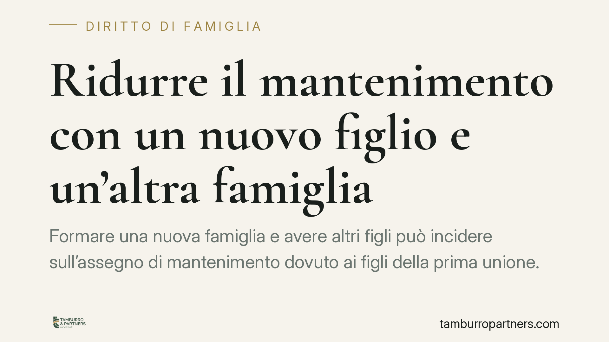

Ridurre il mantenimento con un nuovo figlio e un'altra famiglia
Formare una nuova famiglia e avere altri figli può incidere sull'assegno di mantenimento dovuto ai figli della prima unione. La Cassazione lo ammette, ma non in automatico: serve la prova di un peggioramento economico effettivo. Un tema che riguarda molti genitori separati e che va affrontato con dati concreti, non con dichiarazioni generiche.

Il principio: nessuna riduzione automatica
La domanda ricorre spesso: chi versa un assegno per i figli di una precedente relazione può chiederne la riduzione perché è nato un nuovo figlio o si è costituita una seconda famiglia?
La risposta della giurisprudenza è articolata. La nascita di un ulteriore figlio è una circostanza rilevante, ma non produce da sola alcuna diminuzione dell'importo. Occorre dimostrare che i nuovi oneri familiari hanno determinato un peggioramento reale e non transitorio delle condizioni economiche del genitore obbligato.
È un orientamento consolidato della Corte di Cassazione (si vedano, in senso conforme, Cass. civ. n. 4224/2007 e le pronunce successive di sezione prima in tema di revisione dell'assegno; riferimenti da verificare nella loro attualità). Il filo conduttore è sempre lo stesso: la modifica delle condizioni patrimoniali va provata, non presunta.
Inquadramento normativo
Il dovere di mantenere i figli nasce dagli artt. 147 e 315-bis del Codice civile, che impongono a entrambi i genitori di provvedere ai bisogni della prole in proporzione alle rispettive sostanze e capacità di lavoro.
L'art. 337-ter c.c. individua i criteri di determinazione dell'assegno: attuali esigenze del figlio, tenore di vita goduto durante la convivenza dei genitori, tempi di permanenza presso ciascun genitore, risorse economiche di entrambi e valore delle attività domestiche svolte. È su questo insieme di parametri che il giudice misura anche le eventuali richieste di modifica.
Un punto va tenuto fermo: tutti i figli hanno pari dignità. Il figlio nato dalla seconda unione non ha diritti superiori a quelli del figlio della prima, e viceversa. Il genitore deve distribuire le proprie risorse in modo equilibrato, senza sacrificare i primi figli per privilegiare i nuovi arrivati.
Il tenore di vita e la proporzionalità
La riduzione dell'assegno di mantenimento per un nuovo figlio non può comprimere le esigenze già consolidate dei figli precedenti. L'art. 337-ter c.c. àncora l'assegno anche al tenore di vita goduto in costanza di convivenza: un parametro che il giudice tende a preservare, salvo mutamenti economici significativi.
In concreto, la valutazione è di proporzionalità. Se le nuove spese familiari incidono in modo sostanziale sul reddito disponibile, la riduzione può essere riconosciuta. Se invece il genitore mantiene una capacità economica sostanzialmente invariata, la sola nascita di un altro figlio non basta.
Implicazioni pratiche
Per il genitore che versa l'assegno, la conseguenza è chiara: la revisione passa attraverso un giudizio di modifica delle condizioni (art. 337-quinquies c.c.), non è mai una decisione unilaterale. Sospendere o ridurre di propria iniziativa i versamenti espone al rischio di inadempimento e a conseguenze anche penali.
L'onere probatorio è il vero snodo. Non contano le affermazioni sul "non riuscire più ad arrivare a fine mese", ma i documenti che fotografano il calo effettivo delle risorse o l'aumento non voluttuario delle spese.
Per il genitore che riceve l'assegno, la difesa consiste nel dimostrare che la situazione economica dell'altro non è peggiorata, o che la riduzione comprometterebbe i bisogni del figlio.
Cosa fare in concreto
- Raccogliere la documentazione reddituale completa: dichiarazioni dei redditi degli ultimi anni, buste paga, estratti conto, per mostrare l'andamento effettivo delle entrate.
- Documentare i nuovi oneri familiari: certificato di nascita del nuovo figlio, spese scolastiche, sanitarie e abitative riconducibili alla seconda famiglia.
- Verificare l'attualità della situazione: il peggioramento deve essere stabile, non temporaneo; è opportuno raccogliere elementi che ne dimostrino la persistenza.
- Non modificare l'assegno di propria iniziativa: attivare il procedimento di revisione prima di ridurre i versamenti.
- Valutare preventivamente la sostenibilità della domanda: è opportuno ponderare, dati alla mano, se il quadro probatorio è sufficiente a giustificare la richiesta.
La riduzione dell'assegno di mantenimento per un nuovo figlio è dunque possibile, ma resta subordinata alla prova rigorosa del mutamento economico. La logica del sistema è tutelare tutti i figli allo stesso modo, evitando che la formazione di una nuova famiglia si traduca automaticamente in un minor sostegno per chi è nato prima.
---
Contributo informativo a cura di Tamburro & Partners Avvocati. Non costituisce parere legale.
Ogni famiglia ha il suo equilibrio.
Separazione, divorzio, affidamento, assegno: se vuoi un confronto riservato su una specifica situazione, scrivi allo studio. Ti rispondiamo entro un giorno lavorativo.